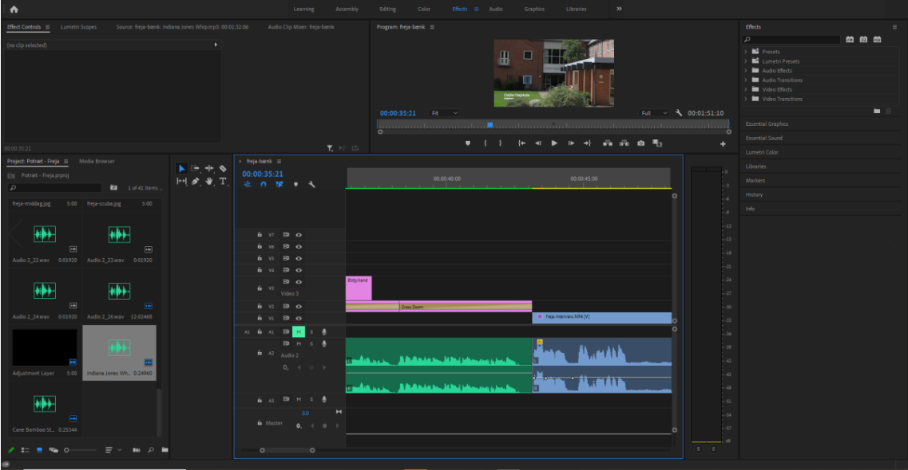

Portrætprojektet på 1. semester bestod i at filme og redigere et kort portræt på 2 minutter af en anden medstuderende på Zealand.
Jeg lærte i dette projekt at filme fra nogle interessante vinkler, gøre brug af det gyldne snit og tænke over baggrund og forgrund når jeg filmer.

Yderligere lærte jeg at gøre brug af Adobe Premiere Pro til at redigere mine optagelser således at det blev samlet til en kort film med gode lydeffekter og transitions.
